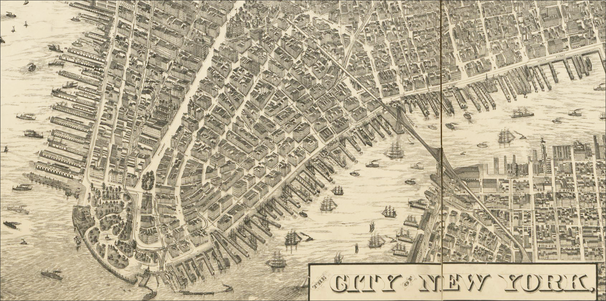

Spatial Thinking with GIS: Course Expectations
Spring 2026 | UENV 3200 - CRN 11009 + UURB 3210 - CRN 111008
 New York, Galt & Hoy, 1879. New York City | Perspective map (not to scale)
👤 Faculty Instructor
- Stephen Metts | The School for Public Engagement: International Affairs
🗓️ Attendance
As this course is highly dependent on sequential learning—relying on learned skills to adopt new ones—maintaining good attendance is critical. Certainly, the unexpected happens, but patterns of attendance issues can quickly become a significant problem. It is also essential to be on time. For Spring 2026, this means being present for the weekly Tuesday meeting. A significant portion of the participation grade is tied to consistent attendance and preparedness. Attendance will be taken weekly and recorded in both Canvas and Starfish.
💬 Course Communication
Throughout the course, students are expected to draw on lecture and lab materials to complete weekly technical assignments. Not every technical detail will be covered directly, requiring students to develop self-sufficiency in problem-solving and communication. The course Slack workspace — Spatial Thinking with GIS | Spring 26 — includes multiple channels for peer and instructor support.
A portion of the participation grade reflects effective communication and problem-solving strategies. Weekly technical assignments typically receive a grade and brief feedback, allowing students to build on strengths and address areas for improvement.
Asking well-formed technical questions is a core professional skill in GIS. Review the following guide on best practices:
🤖 Augmenting Learning with AI Tools
AI tools may be used for research, brainstorming, and GIS workflow development. They can assist with problem-solving, particularly for technical tasks. However, using AI-generated code without understanding the broader GIS workflow can be unproductive or misleading. All written work must be authored by the student, and research must be properly cited. AI tools should be treated as a first pass, not a shortcut. Students should also be mindful of the environmental impact of generative AI due to increased computing demands.
💾 Data Transfer & Storage
Students are strongly encouraged to use cloud storage to back up assignments and final projects. Working without backups is risky. Backup data frequently and in multiple locations. While USB drives are useful, they should not be the sole backup solution. Always compress folders before transferring files. Recommended cloud services include Google Drive, Dropbox, and Box.
Conduct primary work on a local hard drive for performance and reliability. USB drives and cloud storage should not be used for active GIS workflows. Once work is complete, exit the software and back up your project folder (e.g., Assignment_1) to external or cloud storage.
🧠 Core Computer Skills
GIS is a broad technical field that draws on many adjacent skills. Students should have, or be prepared to develop early in the course, the following competencies:
- Beginning to intermediate spreadsheet/database skills (Excel, Google Sheets)
- Saving and exporting files as PDF; capturing screenshots
- Compressing and extracting
.zipfiles
- Basic proficiency with Windows and/or macOS environments used by QGIS Desktop
Students are responsible for addressing skill gaps early. Numerous online resources are available.
All students must join the course Slack workspace prior to the first class meeting (Monday, 01/27/26):
Slack invitation links expire quickly. Join as soon as possible. If the link expires, contact instructor Metts via 📧 Email.
🧰 Course Software
The course uses QGIS as the primary GIS platform. Additional cross-platform tools and online utilities may be introduced and will require browser access.
🗂️ Course Management
Canvas is used for course management. Instructional materials, assignments, lectures, and labs are linked through Canvas, though most content lives externally. Students will use Canvas primarily to access materials and submit assignments. Slack is used for ongoing discussion, technical questions, and peer support. Important announcements will be cross-posted in both Canvas and Slack.
🔐 Maintaining Account Logins
Students will use multiple online platforms requiring accounts and logins. It is the student’s responsibility to manage credentials and maintain access throughout the semester.
📝 Weekly Assignment Policy
Weekly assignments are due by Sunday at 11:59pm, prior to the next Tuesday class.
- Late submissions during the first week incur a 5–10 point penalty
- Late submissions up to three weeks receive up to half credit
- After three weeks, no credit is awarded
The Canvas course will remain open through May 2026. The GitHub course repository will remain available indefinitely. A final repository index will be provided at the end of the semester for continued access to materials.
⏱️ Credit Course Load
For a 4-credit course, students should expect 4–12 hours of work per week outside class. While some weeks are lighter, others are more demanding. Plan your Spring 2026 schedule accordingly. A good rule of thumb is to budget the weekly meeting time plus at least a half-day of focused work, or several shorter sessions, to complete assignments and review materials effectively.